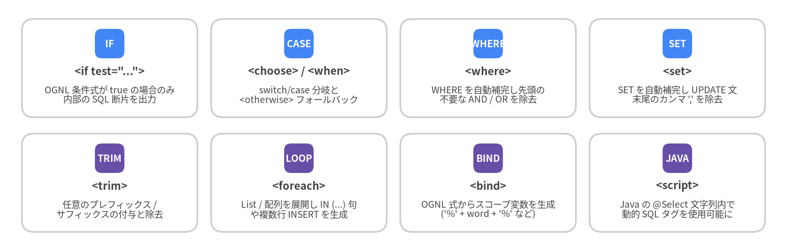
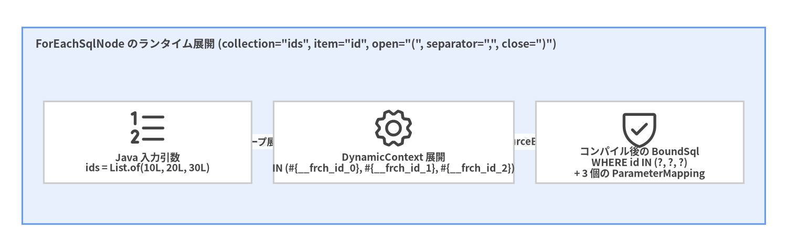

5. 動的 SQL と OGNL タグ
開発者が素の JDBC や JPA Criteria API ではなく MyBatis を選ぶ最大の理由の一つが、宣言的な動的 SQL エンジン です。OGNL (Object-Graph Navigation Language) 式で評価される 8 つの XML タグを使うことで、手作業による AND・OR・カンマ , の文字列整形バグを完全に排除しつつ、すべてのパラメータを安全な PreparedStatement の ? プレースホルダへコンパイルできます。
動的 SQL 全 8 タグの体系

Source Code
from drawlib.canvas import save, setup
from drawlib.smartarts import CardList
from drawlib.styles import Colors, Styles
setup(width=144, height=46, dpi=150)
row1 = CardList(
style=Styles.Neutral.patch(shape_fill_color=Colors.White),
text_style=Styles.DarkBold.patch(text_size=9.8),
description_style=Styles.Dark.patch(text_size=8.4),
badge_shape="rounded_rect",
badge_style=Styles.PrimaryFlat,
badge_text_style=Styles.WhiteBold.patch(text_size=8.8),
direction="horizontal",
spacing=2.5,
)
row1.add('<if test="...">', "OGNL 条件式が true の場合のみ\n内部の SQL 断片を出力", badge_text="IF")
row1.add("<choose> / <when>", "switch/case 分岐と\n<otherwise> フォールバック", badge_text="CASE")
row1.add("<where>", "WHERE を自動補完し先頭の\n不要な AND / OR を除去", badge_text="WHERE")
row1.add("<set>", "SET を自動補完し UPDATE 文\n末尾のカンマ ',' を除去", badge_text="SET")
row1.draw((4.0, 24.5), width=136.0, height=18.0, align="bottom_left")
row2 = CardList(
style=Styles.Neutral.patch(shape_fill_color=Colors.White),
text_style=Styles.DarkBold.patch(text_size=9.8),
description_style=Styles.Dark.patch(text_size=8.4),
badge_shape="rounded_rect",
badge_style=Styles.SecondaryFlat,
badge_text_style=Styles.WhiteBold.patch(text_size=8.8),
direction="horizontal",
spacing=2.5,
)
row2.add("<trim>", "任意のプレフィックス /\nサフィックスの付与と除去", badge_text="TRIM")
row2.add("<foreach>", "List / 配列を展開し IN (...) 句\nや複数行 INSERT を生成", badge_text="LOOP")
row2.add("<bind>", "OGNL 式からスコープ変数を生成\n('%' + word + '%' など)", badge_text="BIND")
row2.add("<script>", "Java の @Select 文字列内で\n動的 SQL タグを使用可能に", badge_text="JAVA")
row2.draw((4.0, 3.5), width=136.0, height=18.0, align="bottom_left")
save()
<where> + <if> + <bind>: 複合条件検索の定石パターン
<where> を使わずに最初の条件が省略されると、SELECT * FROM posts WHERE AND status = 'PUBLISHED' のような構文エラーが発生します。<where> タグ (WhereSqlNode) は、内部の <if> が 1 つ以上出力された場合のみ WHERE を挿入し、直後の不要な AND または OR を自動的に取り除きます。
<select id="searchPosts" resultType="Post">
<if test="titleQuery != null and titleQuery != ''">
<bind name="titlePattern" value="'%' + titleQuery.trim() + '%'"/>
</if>
SELECT id, author_id, title, status, published_at
FROM posts
<where>
<if test="authorId != null">
AND author_id = #{authorId}
</if>
<if test="status != null">
AND status = #{status}
</if>
<if test="titleQuery != null and titleQuery != ''">
AND title ILIKE #{titlePattern}
</if>
<if test="publishedAfter != null">
AND published_at >= #{publishedAfter}
</if>
</where>
ORDER BY published_at DESC
</select>
<choose>・<when>・<otherwise>: 排他条件分岐 (switch/case)
複数の条件のうち 最初に一致した 1 つだけ を適用したい場合は <choose> を使用します。
<select id="findFeaturedPosts" resultType="Post">
SELECT id, author_id, title, status, view_count
FROM posts
<where>
status = 'PUBLISHED'
<choose>
<when test="postId != null">
AND id = #{postId}
</when>
<when test="authorId != null">
AND author_id = #{authorId}
</when>
<otherwise>
AND view_count >= 1000
</otherwise>
</choose>
</where>
</select>
<set>: 非 null フィールドのみの部分 UPDATE
パッチ更新用 DTO の非 null フィールドのみを UPDATE する場合、<set> (SetSqlNode) が自動的に SET キーワードを補完し、最後の有効なカラム末尾のカンマ , を取り除きます。
<update id="updateAuthorPatch">
UPDATE authors
<set>
<if test="username != null">username = #{username},</if>
<if test="email != null">email = #{email},</if>
<if test="bio != null">bio = #{bio},</if>
updated_at = CURRENT_TIMESTAMP
</set>
WHERE id = #{id}
</update>
カスタム <trim> による等価表現
<where> と <set> はいずれも内部的に TrimSqlNode のサブクラスです。<trim> を使えば独自のトリミング規則を柔軟に記述できます。
<!-- <where> と等価な <trim> -->
<trim prefix="WHERE" prefixOverrides="AND |OR ">
...
</trim>
<!-- <set> と等価な <trim> -->
<trim prefix="SET" suffixOverrides=",">
...
</trim>
<foreach>: 安全な IN (...) 句と複数行バルク INSERT
ForEachSqlNode は任意の Iterable (List、Set)、Java 配列、または Map を反復処理し、インデックス付きのユニークなプレースホルダ (#{__frch_id_0}、#{__frch_id_1}、...) を生成して各要素を TypeHandler 経由で安全にバインドします。

Source Code
from drawlib.canvas import save, setup
from drawlib.diagrams.architecture import ArchitectureDiagram, Node, NodeGroup, PhosphorIcon
from drawlib.styles import Colors, Styles
setup(width=144, height=46, dpi=150)
d = ArchitectureDiagram(
node_style=Styles.Dark,
node_text_style=Styles.DarkBold.patch(text_size=9.2),
edge_style=Styles.Dark.patch(line_width=1.5),
edge_text_style=Styles.DarkBold.patch(text_size=8.8),
node_card_style=Styles.Neutral.patch(shape_fill_color=Colors.White),
)
grp = d.add(
NodeGroup(
"ForEachSqlNode のランタイム展開 (collection=\"ids\", item=\"id\", open=\"(\", separator=\",\", close=\")\")",
width=136,
height=36,
style=Styles.PrimaryNeutral,
text_style=Styles.DarkBold.patch(text_size=10.0, halign="left", valign="top"),
),
xy=(4, 5),
)
n_in = grp.add(Node("Java 入力引数\nids = List.of(10L, 20L, 30L)", icon=PhosphorIcon.LIST_NUMBERS, width=38, height=15), xy=(23, 15))
n_exp = grp.add(Node("DynamicContext 展開\nIN (#{__frch_id_0}, #{__frch_id_1}, #{__frch_id_2})", icon=PhosphorIcon.GEAR, width=44, height=15), xy=(68, 15))
n_ps = grp.add(Node("コンパイル後の BoundSql\nWHERE id IN (?, ?, ?)\n+ 3 個の ParameterMapping", icon=PhosphorIcon.SHIELD_CHECK, width=38, height=15), xy=(113, 15))
n_in.connect(n_exp, label="ループ展開")
n_exp.connect(n_ps, label="SqlSourceBuilder")
d.draw(xy=(0, 0))
save()
<select id="findPostsByIds" resultType="Post">
SELECT id, author_id, title, status
FROM posts
WHERE id IN
<foreach item="id" index="idx" collection="ids"
open="(" separator="," close=")" nullable="false">
#{id}
</foreach>
</select>
[!WARNING] 空の
List(ids.isEmpty()) を<foreach>に渡すとWHERE id IN(またはWHERE id IN ()) が生成され、SQL 構文エラーとなります。呼び出し前の Java コードでif (ids.isEmpty()) return List.of();と早期リターンするか、XML 側で<if test="ids != null and !ids.isEmpty()">でガードしてください。